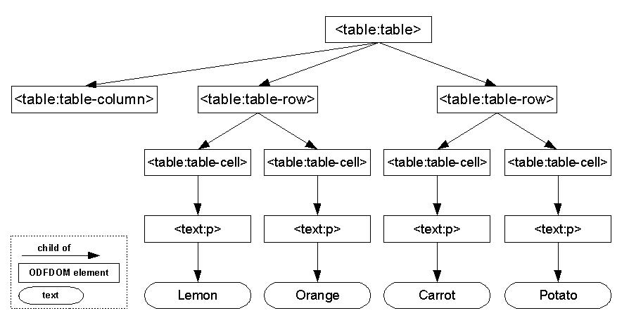

The ODFDOM project's objective is to provide an easy API for reading, writing and manipulating documents of the OpenDocument format (ODF). To archive this, the ODFDOM API follows a layered approach to access documents, as layered design is the robust foundation for a well-designed modular structure.

The ODF Package Layer provides access to all resources stored within the ODF package, such as XML streams, images or embedded objects.
The ODF Package API The ODF Package API covers all features from the third part of the ODF 1.2 specification defining the ODF Package features. The ODF 1.2 package features are build on top technologies as ZIP package handling, W3C encryption, W3C signature and W3C metadata.
At this layer a document is in general represented by a bundle of named resources zipped to a package. For instance, an ODF text document like 'myVacation.odt' might contain the following files:

Note: All file streams aside of the '/Pictures' directory and its content are specified by the ODF standard. Furthermore, the file streams are similar for all types of ODF documents.
The main requirements for this layer in regard of ZIP are:
All sources of the Package layer are organized in ODFDOM beyond org.odftoolkit.odfdom.pkg.*
The following example illustrates how to add a graphic to the package level (although not shown by an ODF application (like OpenOffice.org), as not used by the shown content):
import org.odftoolkit.odfdom.pkg.OdfPackage; [...] // loads the ODF document package from the path OdfPackage pkg = OdfPackage.loadPackage("/home/myDocuments/myVacation.odt"); // loads the image from the URL and inserts the image in the package, // adapting the manifest pkg.insert(new URI("./myHoliday.png"), "Pictures/myHoliday.png", "image/png"); pkg.save("/home/myDocuments/myVacation.odt");
The ODF XML Layer provides all the features of an office format, such as tables, images, numbering etc. All features are defined in the first part of the ODF 1.2 specification describing the ODF XML schema. This layer consists of two APIs representing two different views on the features.
The ODF DOM API
The ODF DOM API gives access to the XML, the elemental parts of the ODF schema features. With this API it is easy to manipulate all specified XML nodes extending the platform and language independent DOM API DOM API standardized by the W3C - best-known by its implementation through the browsers. It extends the DOM API using a typed DOM. For every ODF XML element and ODF XML attribute defined by the ODF grammar (the RelaxNG schema) a unique class exists, providing methods for their allowed children. The purpose is to provide the user a corset to easily write valid ODF without consulting the spec constantly. This API is very consistent as instead of laboriously writing all these classes, the sources were generated directly from the ODF schema. This generation guarantees complete coverage of the ODF specification on one side and an easy and accurate upgrade to future ODF specifications on the other.
At this level, all XML file streams of the document are accessible via the W3C DOM API, but only the ODF standardized XML file streams of the document (e.g. content.xml, meta.xml) have their own classes representing their ODF XML elements. Foreign XML within a specified ODF XML file will remain in the document model in general and won't be neglected unless desired ( which still might be a future option).
Example of the ODF XML representing a table in ODF:

Note: In the OpenDocument standard the ODF elements are reused among all document types. The above XML of a table is for instance equally usable in Text and Spreadsheet documents.
This XML would be mapped to a W3C derived ODF DOM class structure:

All sources of the typed DOM API are organized beyond org.odftoolkit.odfdom.dom.*
The sources for the ODF elements are all generated from the ODF grammar (RelaxNG schema) using the following naming conventions in the Java reference implementation:
DrawFrameElement class).org.odftoolkit.odfdom.dom.draw.DrawFrameElement.Note: The element local names 'h' and 'p' have been renamed to the classes 'Heading' and 'Paragraph' for usability reasons.
The following example illustrates how to add a graphic to the ODF document, that it is viewable:
import java.net.URI; import org.odftoolkit.odfdom.OdfElement; import org.odftoolkit.odfdom.doc.OdfDocument; import org.odftoolkit.odfdom.doc.OdfTextDocument; import org.odftoolkit.odfdom.doc.draw.OdfDrawImage; import org.odftoolkit.odfdom.dom.element.draw.DrawFrameElement; import org.odftoolkit.odfdom.dom.element.office.OfficeTextElement; import org.odftoolkit.odfdom.dom.element.text.TextPElement; [...] // Load file OdfTextDocument odt = (OdfTextDocument) OdfDocument.loadDocument("ImageIn.odt"); // get root of all content of a text document OfficeTextElement officeText = odt.getContentRoot(); // get first paragraph TextPElement firstParagraph = OdfElement.findFirstChildNode(TextPElement.class, officeText); // XPath alternative to get the first paragraph /* XPath xpath = XPathFactory.newInstance().newXPath(); xpath.setNamespaceContext(new OdfNamespace()); OdfFileDom dom = odt.getContentDom(); firstParagraph = (TextPElement) xpath.evaluate("//text:p[1]", dom, XPathConstants.NODE); */ // insert a frame DrawFrameElement frame = firstParagraph.newDrawFrameElement(); // insert an image: This is a class from the Document API OdfDrawImage image = (OdfDrawImage) frame.newDrawImageElement(); image.newImage(new URI("./MySampleImage.png")); // Save file odt.save("ImageOut.odt");
Even in this example we had to refer to a class from the Document API. Otherwise our implementation had gotten quite long and complex.
The ODF Document API
The ODF Document API provides a different much more high level view on the ODF schema features. This API is concerned about usability, hiding all ODF XML implementation details from the user, covering frequent user scenarios. For example, changing the content of a certain spreadsheet cell (e.g. Add 'Hello World' to a spreadsheet cell positioned at 'B2'). While in the ODF DOM API in general each class represents an ODF XML node, here a class covers multiple underlying ODF XML elements (& their attributes). Think of puzzle piece consisting of multiple smaller pieces. Therefore the typed DOM tree is being mapped to feature tree.
As naming convention all sources of the ODF document functionality layer are organized beyond org.odftoolkit.odfdom.doc.*
The name of a document class is in general similar as the root element from the XML layer feature, only there is the new prefix 'Odf' and the suffix 'Element' has been neglected.
For example, the document class for a 'draw:frame' element would be represented in the ODFDOM Java reference implemenation as org.odftoolkit.odfdom.doc.draw.OdfDrawFrame class. Some classes of the Document API differ from this naming convention, e.g. OdfTextParagraph is the subclass of TextPElement. However by browsing the packages you will easily find the classes your looking for.
Note: The Document API will change. The current inheritance between DOM and DOC elements does not fit any longer in the multiple elements to a single document feature (1:n) pattern. The first Document Object is the table rg.odftoolkit.odfdom.doc.table.OdfTable, others will follow soon.
Again let's look at the previous code example for the DOM API: Remember all DOM element classes are abstract and we're really getting objects from the Document API: Even if frame.newDrawFrameElement() is defined to return the DOM class DrawFrameElement, it really returns the DOC subclass OdfDrawFrame. So it's always save to use explicit casting OdfDrawFrame frame = (OdfDrawFrame) firstParagraph.newDrawFrameElement();.
However reworking the previous example would just make the code larger, since we're not using any of the document methods provided by the DOC subclasses.
Here's an example for working with DOC classes, completely avoiding handling the DOM manually:
[...] // Load Image OdfTextDocument odt = (OdfTextDocument) OdfDocument.loadDocument("ImageIn.odt"); // Play around with text odt.addText("When there is no paragraph, the text will be embedded in a new paragraph"); odt.newParagraph("Create new paragraph"); odt.addText("\nThis is a new line"); // Insert Image and make last paragraph its anchor odt.newImage(new URI("./MySampleImage.png")); // Insert new spreadsheet as sub document into the package within directory "myOdsDirectoryPath/" odt.insertDocument(OdfSpreadsheetDocument.newSpreadsheetDocument(), "myOdsDirectoryPath"); // Save file odt.save("ImageOut.odt");
Go on reading about how to set up a building environment and where to get the source code.